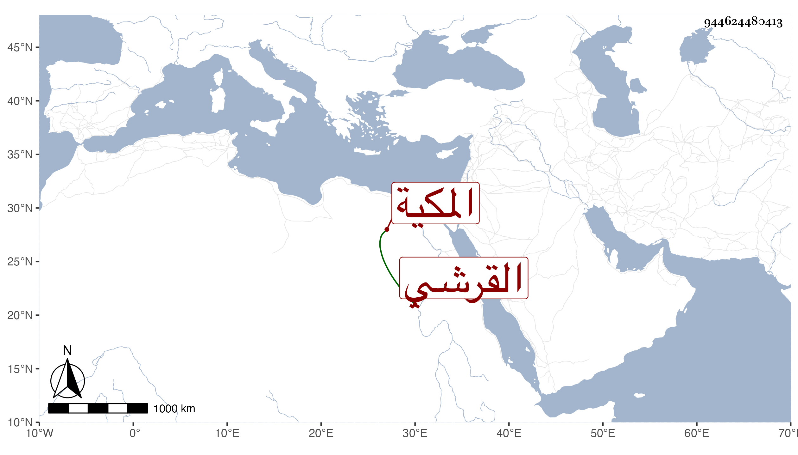

0902Sakhawi.DawLamic.ITO20230111-ara1.EIS1600.944624480413
Biography ID: 944624480413
906
أم الخير ابنة الجمال محمد بن النجم محمد بن أبي البركات محمد بن أبي السعود محمد ابن حسين بن علي بن أحمد بن عطية بن ظهيرة القرشي المكية شقيقة عبد الباسط وعبد الوهاب وست قريش وغيرهم وتسمى شقراء . ولدت في ذي القعدة سنة ثلاث وخمسين وثمانمائة ، وأجاز لها جماعة وتزوجها ابن عمها العفيف عبد الله بن أبي الفضل وأستولدها عدة منهم أبو الفضل وتوجهت مع أهلها للزيارة النبوية غير مرة ولها عقل وتودد .
